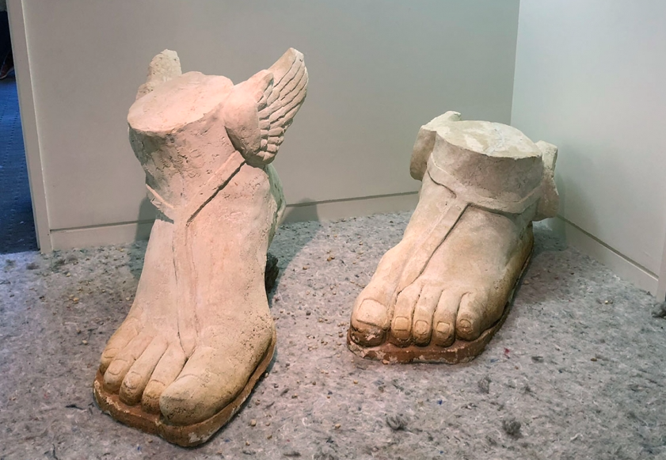

----------------------------------------------------------------- When does supplemental text become too much?
Article by Laura Grasso 4-9-18
In the most recent edition of the Spring/Break Art Show that takes place annually during Armory Week, I walked away with an overwhelming amount of paper – press releases, business cards, post cards, and in one case, a fan. In experiencing the 144 mini-exhibitions I wasn’t just getting an idea of a single gallery’s current best and brightest, but continually re-orienting myself to interpret both the art in any given room and then synthesize how those pieces worked as a collected unit within the larger scope of the theme of the fair, “A Stranger in a Strange Land”. What sets Spring/Break apart from the other fairs is its curatorial bent, presenting an overarching theme and then inviting curators to run from there, but this open-ended call often comes with a need for definition and explanation for viewers to fully appreciate the goals of both the curators and the artists within those spaces. Enter the paper.
While gallery booths at many other art fairs have some supplemental material or cards for potential buyers, the explanatory press release is an essential element for many Spring/Break exhibitions. Curators also tend to baby-sit their booths and openly encourage viewers to ask questions and create a dialogue about the work they have so thoughtfully selected. While press releases are a standard practice for gallery shows, their presence in this art fair context push Spring/Break into stark contrast with the rest of the showings during Armory Week, catering to the viewing experience rather than the openly sales-driven focus of other fair booths. These single sheets may dig in to the artist’s intentions or the curator’s interpretation of the theme, but most crucially they create context so that the work may exist in a deeper space in the viewer’s mind rather than amass value on a purely aesthetic scale. While visual art is ostensibly a presentation of aesthetics, an artist bears no responsibility to communicate with aesthetic terms that are defined by anyone outside of their own creative sphere. With the work at Spring/Break selected first for curatorial cohesion rather than sales, this investigation between visual communication and the written interpretation that accompanies it begs the question – does the necessity of text help or hinder an artist whose ultimate goal is to sell work that will then be viewed outside of this presentational context?

A few weeks before my viewing of Spring/Break, I saw the latest iteration of The New Museum triennial, “A Song for Sabotage”. The primary focus of the exhibition is a call to action, drawing light to the systematic failure of political and societal structures on a global scale. I read every speck of wall text for every piece, in many cases multiple times. The standard format for the text for each piece or series gave a brief societal context in the first paragraph before delving into how the work responded to or related to that context in the second. The majority of the work in the exhibition is deeply intimate, presenting specific points of view to global events that have shaped and defined cultures, the nuances of which would be lost on American viewers without the accompanying text. By creating an exhibition where so many marginalized voices are given room to speak on their own terms, curators Gary Carrion-Murayari and Alex Gartenfeld have also created an exhibition where the viewer has to first understand the impetus of the event before they can then synthesize the response. In many cases, I approached the wall text before even taking in the work because the meaning of the work was so entrenched in context that was entirely foreign to me. This method of art viewing felt somewhat counterintuitive, as it forced me to take on the artists’ intentions before I could form my own instinctual reaction to the work, and in no case could the work speak entirely for itself – the full thrust of the work was always ensconced in the text. In some cases, the text would completely alter my opinion of the pieces, but not reading it did not seem like an option in the context of this particular exhibition.
In assessing the function of wall text between these two curatorial endeavors – in the completely contrasting scale of a single room in an abandoned office versus three floors of a major museum – both cases allow for artists to create and exhibit work that has a greater alignment to expressing their innermost perspectives rather than sacrificing that expression for higher aesthetic principles. However, when presented in a saleable context rather than within an institution, the necessity of information takes on a different hierarchy within the art viewing experience. While the artists in “A Song for Sabotage” are all working artists with art for sale, their work in this context is by and large educational, meant to provoke and instruct and stroke the fires of inspired action for those who view it. For Spring/Break curators, the necessity of information takes on a different degree of leniency, and work is expected to function both within the specific curatorial context as well as appeal to potential buyers who will then recontextualize that work within their own homes or collections. In two cases of literature-heavy art viewing, both sets of artists involved are jockeying for their work to be understood and internalized by the viewers; the work that is set within the institutional sphere is far more likely to have its text studied and considered instead of tossed aside like an optional supplement.
So where does this leave Spring/Break? While the show has ended and the work from the fair is now for sale online, the text that accompanied these pieces in their initial exhibition is no longer available. Gallery exhibitions’ can be browsed after their closing date, complete with installation shots and the full text of the press release, and a major museum show like “A Song for Sabotage” has a full book published alongside it. Spring/Break’s presence after the close of the fair completely removes the work from the context it originally provided, reinforcing the sales aspect that is somewhat downplayed during the actual run of the fair. In other fairs, a similar prospect would not be such a perspective shift, but the removal of the text during the later sales period upholds the notion that the text is not essential to the viewing process, and therefore the handouts accumulated during the show feel unwarranted or easier to ignore. Spring/Break is successful as a feat of curatorial content, but the reliance on text during the initial run of the show hinders the fair when that text becomes ultimately unimportant.
----------------------------------------------------------------- Home